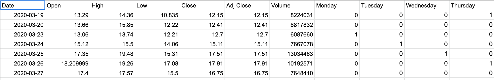
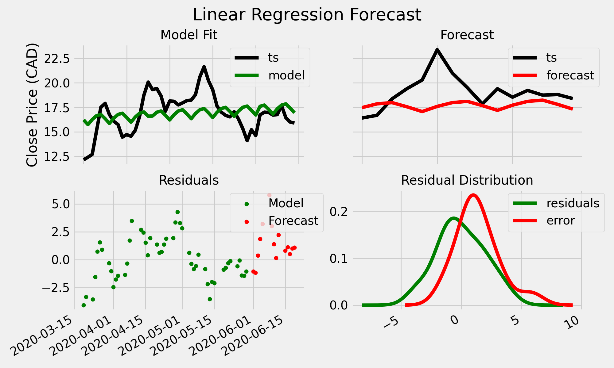
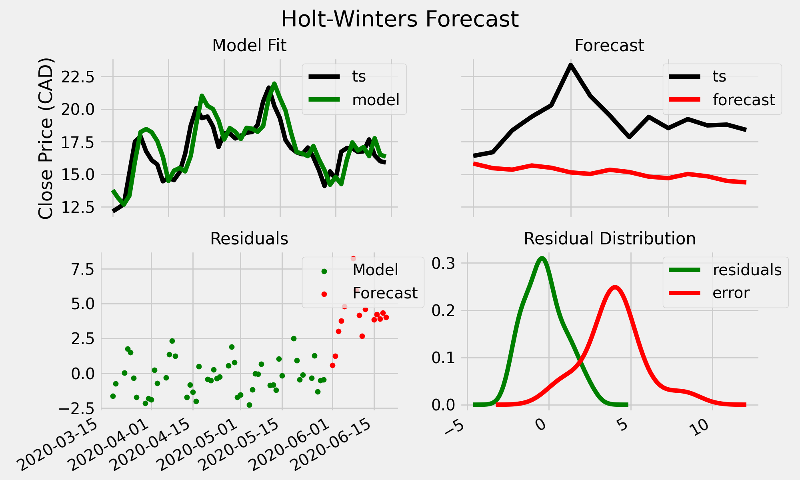
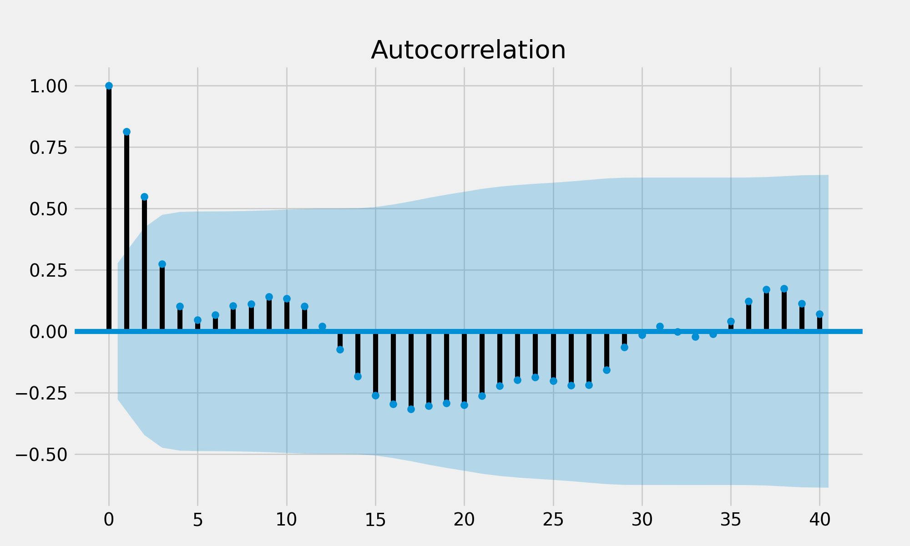
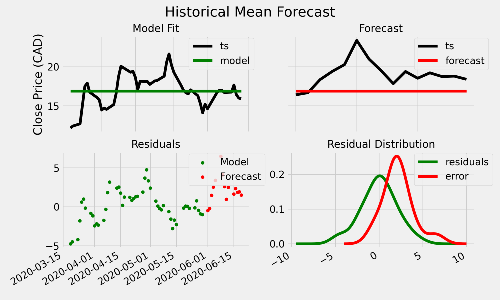
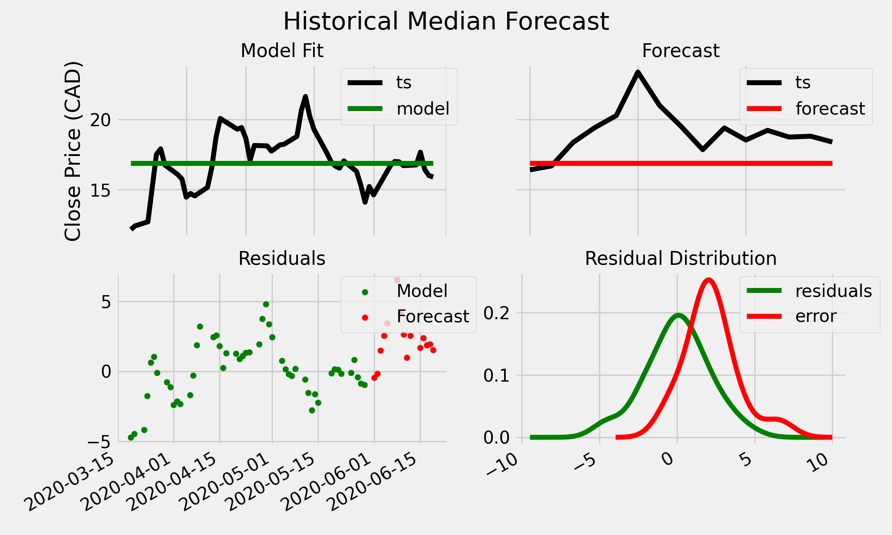
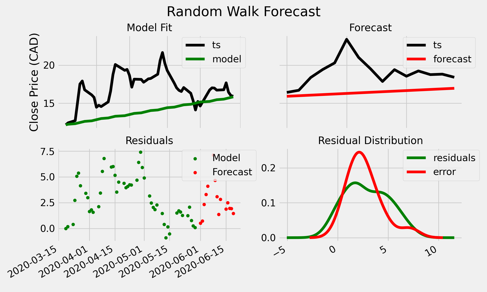
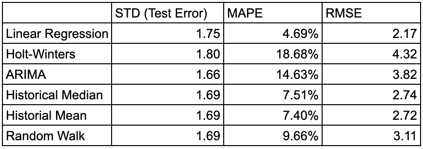

Type of Project
Date
Category
Time Series Analysis -
Finance
Objective
Forecasting from a short time series is notoriously difficult, with the relatively few data points resulting in models performing poorly out-of-sample. Additionally, the ongoing pandemic introduces a large amount of variation to the behaviour of markets. In this article, we evaluate common forecasting models in the following case study: the post-crash behaviour of AC.TO during the COVID-19 global pandemic.
How do we know whether a model whether a model is performing well on a time series? At the very minimum, it should be more accurate than trivial forecasts. While this may be a given for any moderately tuned model for time series with abundances of data, it is far from a given for short time series.
We will investigate the following time-series techniques:
Linear Regression
Holt-Winters
Autoregressive Integrated Moving Average (ARIMA)
Random Walk ("Naive")
Historical Mean
Historical Median
Model accuracies will be evaluated using with the following metrics:
Root mean squared error
Mean absolute percentage error
To provide quantitative insight into the absolute and relative errors of the forecast.
Background
On March 11, 2020, the World Health Organization declared the ongoing COVID-19 outbreak a pandemic. There have been over 10 million cases reported in more than 188 countries and territories as of July 2020, and the socioeconomic consequences are numerous.
Some industries, such as commercial airlines, have suffered unprecedented losses. Air Canada’s stock plummeted to 23% of its value in between January 13th and March 19th.
Global events of this scale lead to short-term volatility in the markets, causing difficulty in evaluating risk. Thus reveals the purpose of this article: to compare common forecasting models for short time series forecasting, evaluated on Canada’s largest airline’s stock price.
Methodology and Data
We use the closing price of TSX:AC from March 19 to June 19 as our time series data, using the earliest 80% and latest 20% to train and test, respectively.
AC.TO data for 2020 is downloaded from Yahoo Finance.
Linear Regression
We choose a simple model by creating dummy variables for the day of the week and the current index of the time series data.
With the only consideration being that we do not use a separate variable for friday, but rather represent it with the absence of all of Monday-Thursday.
Code
def plot_ols_forecast():
df = pd.read_csv("./src/AC_TO Pre-Processed - AC.TO.csv")
df['Date'] = pd.to_datetime(df['Date'])
ols_df = df[["Date","Monday","Tuesday","Wednesday","Thursday","Close"]]
ols_df["Indices"] = ols_df.index
df_train, df_test = split_data_test_train(ols_df)
reg_models.plot_ols_forecast(df_train=df_train, df_test=df_test, col="Close", summary=True)
def plot_ols_forecast(df_train, df_test, col="Close", summary="True"):
dates = df_train["Date"].append(df_test["Date"])
del df_train["Date"]
del df_test["Date"]
ols_model = get_ols_model(df_train, col=col)
df_train["model"] = ols_model.predict(sm.add_constant(df_train.loc[:, df_train.columns!="Close"]).to_numpy())
df_test["forecast"] = ols_model.predict(sm.add_constant(df_test.loc[:, df_test.columns!="Close"]).to_numpy())
df = df_train.append(df_test)
df["Date"] = dates
df["ts"] = df[col]
utils.plot_forecast(df=df, title="Linear Regression Forecast", summary=summary)
def get_ols_model(train_df, col, with_y_int = True):
values = train_df[col].to_numpy()
X = train_df.loc[:, train_df.columns!=col]
if with_y_int:
X = sm.add_constant((X))
X = X.to_numpy()
return sm.OLS(values, X).fit()
Results
Holt-Winters
Exponential Smoothing methods may seem a natural “superior” choice for short time series, as each prediction is not largely affected by the lack of old observations due to its emphasis on recent values. This reasoning is not necessarily accurate, as a short time series will still introduce difficulties in tuning the smoothing parameters of the model.
Unlike linear regression, Holt-Winters allows us to model both seasonality and trend within the time series. We use the additive method as the amplitude of variations in this time series appear roughly constant.
We use qualitative judgement for choosing not to use the damped method: AC.TO has crashed hard, and may be currently undervalued. Thus, there is larger upside to grow in the short term, which is the timeframe of interest.
Code
def plot_holt_winters_forecast():
df = pd.read_csv("./src/AC_TO Pre-Processed - AC.TO.csv")
df['Date'] = pd.to_datetime(df['Date'])
df_train, df_test = split_data_test_train(df)
ets_models.plot_hw_model(df_train, df_test, 4, col="Close", summary=True, seasonal_type="add", damped=False)
def plot_hw_model(df_train, df_test, periods, col="Close", summary=True, seasonal_type='add', damped=True):
hw_model = ExponentialSmoothing(df_train[col], trend="add", seasonal=seasonal_type, seasonal_periods=periods, damped=damped).fit()
hw_predictions = hw_model.predict(start=0, end=len(df_train)+len(df_test))
df_train["model"] = hw_predictions[:len(df_train)]
df_test["forecast"] = hw_predictions[len(df_train):len(df_train) + len(df_test)]
df = df_train.append(df_test)
df["ts"] = df[col]
utils.plot_forecast(df=df, title="Holt-Winters Forecast", summary=summary)
Results
Autoregressive Integrated Moving Average (ARIMA)
ARIMA models can be very effective for short-term forecasting. Like Holt-Winters, ARIMA is a univariate model, which performs well when underlying factors (disposable income, travel laws) do not change in behaviour.
We use a seasonal ARIMA model to attempt to capture the semi-regular spikes in the test series. ARIMA models require time series to be made stationary through differencing - below are the ACF plots for the time series and it’s first two differenced series.
In both cases, the first correlation is somewhat large; however, this is not improved when taking additional differences (and indeed, we don’t expect to have to take more than two differences for most time series).
We see that the time series is clearly not stationary. Additionally, first difference has somewhat sinusoidal autocorrelations, implying seasonality. Thus, we use a value of d=2.
Code
def plot_ARIMA_forecast():
df = pd.read_csv("./src/AC_TO Pre-Processed - AC.TO.csv")
df['Date'] = pd.to_datetime(df['Date'])
df_train, df_test = split_data_test_train(df)
sm.graphics.tsa.plot_acf(df_train["Close"],lags=40)
ts = df_train["Close"].diff()
sm.graphics.tsa.plot_acf(ts[1:], lags=40)
sm.graphics.tsa.plot_pacf(ts[1:], lags=40)
ts = ts.diff()
sm.graphics.tsa.plot_acf(ts[2:], lags=40)
sm.graphics.tsa.plot_pacf(ts[2:], lags=40)
arima_models.plot_ARIMA_forecast(df_train=df_train, df_test=df_test, col="Close")
def plot_ARIMA_forecast(df_train, df_test, col="Close", summary=True):
arima_model = pmdarima.auto_arima(df_train[col], exogenous=None,
seasonal=True, stationary=False,d=2,
m=4, information_criterion='aic',
error_action='ignore',trace=True)
if summary:
print("best model --> (p, d, q):", arima_model.order, " and (P, D, Q, s):", arima_model.seasonal_order)
fit_sarimax(df_train, df_test, order=arima_model.order, seasonal_order=arima_model.seasonal_order, col=col, summary=summary, figsize=(12,8))
def fit_sarimax(df_train, df_test, order,
seasonal_order, figsize, col="Close", summary=True, exog_train=None,
exog_test=None):
## train
model = smt.SARIMAX(df_train[col], order=order,
seasonal_order=seasonal_order,
exog=exog_train, enforce_stationarity=True,
enforce_invertibility=True).fit()
df_train["model"] = model.fittedvalues
## test
df_test["forecast"] = model.predict(start=len(df_train),
end=len(df_train) + len(df_test) - 1,
exog=exog_test)
## evaluate
df = df_train.append(df_test)
df["ts"] = df["Close"]
utils.plot_forecast(df=df, title="Auto Arima Forecast", summary=summary)
Results

Historical Mean, Median
These methods simply forecast future values of the series by using the historical mean and median.
Code
def historical_mean():
df = pd.read_csv("./src/AC_TO Pre-Processed - AC.TO.csv")
df['Date'] = pd.to_datetime(df['Date'])
df_train, df_test = split_data_test_train(df)
ha_models.plot_historical_mean(df_train=df_train, df_test=df_test)
def plot_historical_mean(df_train, df_test, col="Close", summary="True"):
mean = statistics.mean(df_train[col])
df_train["model"] = [mean] * len(df_train)
df_test["forecast"] = [mean] * len(df_test)
df = df_train.append(df_test)
df["ts"] = df[col]
utils.plot_forecast(df=df, title="Historical Mean Forecast", summary=summary)
With the historical mean code being similar.
Results
 Random Walk ("Naive")
Random walk models, similar to historical means and medians, do not make use of most of the series’ features and again serve as a point of comparison.
Here, we implement random walk with drift. The forecast, then, is made of expected values which follow that linear drift.
Code
def random_walk():
df = pd.read_csv("./src/AC_TO Pre-Processed - AC.TO.csv")
df['Date'] = pd.to_datetime(df['Date'])
train, test = split_data_test_train(df)
rw_models.plot_random_walk(train, test)
def plot_random_walk(df_train, df_test, col="Close", summary="True", drift="True"):
b = df_train[col].iloc[0]
m = (df_train[col].iloc[-1] - df_train[col].iloc[0]) / len(df_train)
df_train["model"] = df_train.index * m + b
df_test["forecast"] = (df_test.index) * m + b
df = df_train.append(df_test)
df["ts"] = df["Close"]
utils.plot_forecast(df=df, title="Random Walk Forecast", summary=summary)
Results
Results and Discussion
Here, we chart the performance metrics of the models:
All these models performed rather poorly on the test data. This is reflected in the residual densities as well - every model seemed to under-forecast the time series, with residual distributions centered around some positive nonzero value.
The linear regression model performed the best, followed by Historical Mean, Median, and Random Walk. Interestingly, ARIMA and Holt-Winters, the most “complex” of the models investigated, performed the worst. This is consistent with a 2015 study where Kesten C. Green, and J. Scott Armstrong examined 32 papers comparing accuracies of forecasts:
Eighty-one percent of the comparisons found that forecasts from simple methods were more accurate than, or similarly accurate to, those from complex methods. Averaged across the 25 papers that provide quantitative comparisons, the errors of forecasts from complex methods were 27 percent greater than the errors of forecasts from simple methods.
The comparison conducted in this article, of course, is just one short time series and is not nearly enough to make any generalizations on the efficacy of the mentioned models. Rather, it provides the following insight for those unaware: pursuing complexity may not lead to improved results.
You can view the full source code on github.